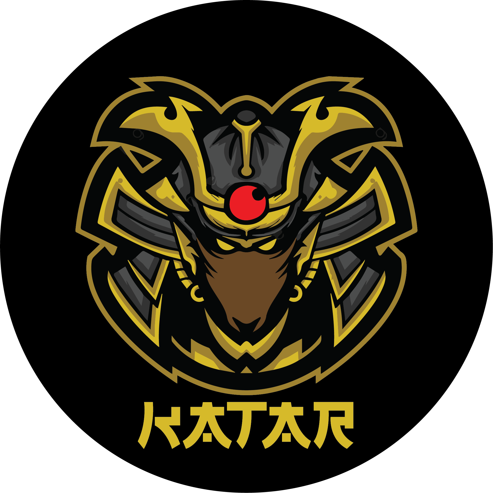
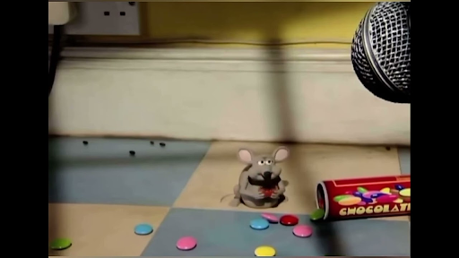
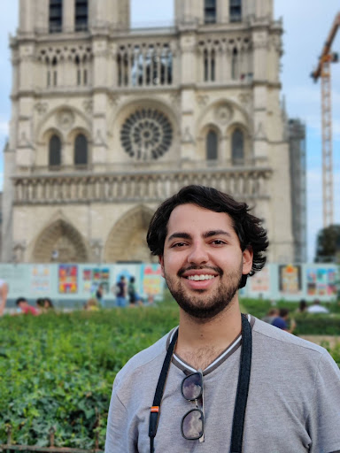
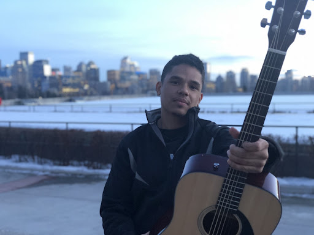
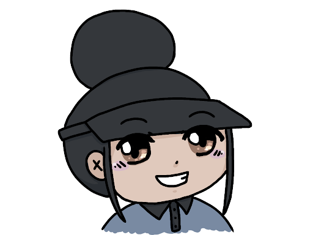
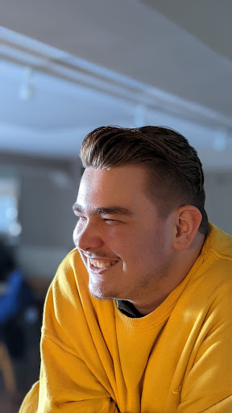
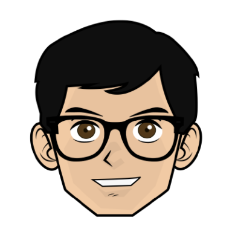
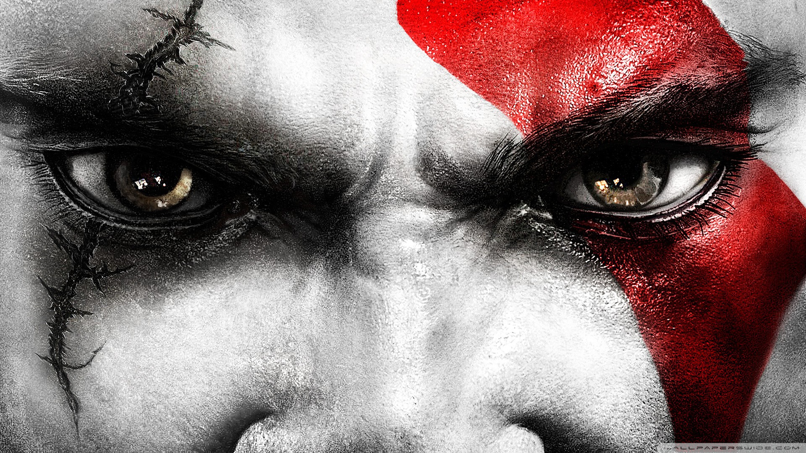

Biography Page

Srujan
Hello my name is Srujan Lokhande,I was born in India on June 23, 2000, and I have been inclined Games right from childhood.
Growing up, I spent most of my time in front of my PC, discovering new things and technologies, so I was a techie right from the beginning.
I completed my bachelors in Computer Science in 2022 and am looking forward to contributing to the gaming industry.
From the future perspective, I want to be an Ethical Hacker and a Gamer and not just confine myself only to the gaming industry.
I have a cute dog named Oro at my house back in India who always likes to bite me.

Pedro
I was born in Mexico City on February the 4th, 1998.
Back in Mexico, I lived with my parents and my sister, who is currently 20 years old.
I have one pet, shes a dachshund dog named Mia and I had another dachshund called Slinky who recently passed away.
I studied audio engineering at Tec de Monterrey, State of Mexico Campus and graduated Cum Laude back in 2020 during the pandemic.
After graduating, I worked as a freelance mixing and mastering engineer, composer and session musician (guitarist).
In 2022, I got my first full time job as an audio engineer for the studio Bunker Ganesh, in which I was in charge of recording, editing and directing audiobooks for Penguin Random House Audio.
Now, I am seeking to improve my engineering skills by becoming a software developer.
I love playing the guitar, listening to music, taking long walks in the city, hanging out with friends and coding!

Rodrigo
Rodrigo Hernández Ferzuli is an Audio Engineer born in Mexico City on September 3rd, 1999.
Rodrigo has always been interested in engineering and technology in general, since he was very young he was interested in stuff like robotics, programming educational robots using software like LEGO MINDSTORMS NXT, Scribbler Program Maker, etc.
Some time later, as he grew up, he became interested in music, specifically in becoming a DJ, what a drastic change, right?
That's when he started using software to produce music, such as FL Studio, generating his first "songs" of the EDM genre.
Not being happy with his music productions, he gave up on music, but discovered that the world of audio goes much further than just the musical side, and discovered sound design applied to film and video games, which he loved, to such a degree that he decided to study a bachelor's degree in audio engineering, in the year 2018.
Some time later, he decided to focus his career entirely on audio for video games, dreaming of becoming a Game Audio Programmer one day.

Rafael
I am from Brazil and I grew up in a large city called Sao Paulo.
I was originally born in another city named Boa Esperanca, although my parents went to that city only to take me to Sao Paulo when I was just a cute and little baby.
Yes, I am adopted.
I have always played video games since I was a little kid, my favorite console back then was playstation 2.
Since I was young I was into computers and would always wonder how softwares got created, even though I did not have any clue on what was going on, I would try to create a server for this MMORPG game called Perfect World back in 2010.
In the year of 2017, I started taking a games design diploma in my hometown,
but then this opportunity of coming to Canada showed up and I dropped out of college.
I came to Canada, took a program called ELF at SAIT in Calgary, Alberta.
By the end of 2018, I went back to Brazil and restarted taking the games design course, but it was in a university, therefore it would get me a bachelor degree.
I graduated on that course by the end of 2022 and during that program I have worked for a few game studios as a game programmer.
I am hoping to continue working as a programmer, but it does not necessarily have to be in the game creation field only, I am open minded about it.
My main interest at the moment is to work as a gameplay programmer, where I can program gameplay systems, AI, mechanics and so on.

Micaella
I was born and raised in Winnipeg, Manitoba.
I lived with my parents, my sister, my brother, and my two dogs.
I create things during my free time, in many different mediums.
My most recent art project was crocheting some leg warmers, because for some reason Winnipeg does not sell any (despite it being so cold there).
I have been coding since grade 12, and after graduation I attended the University of Manitoba and majored in Computer Science.
I did not finish because I hated online learning, and went back to high school to attend the post-high Game Design program.
In the post-high program I made games for CBC Kids and worked in a group project for FlipsideXR.
The teachers of that program recommended that I apply to this school and program and I got in, so here I am!

Connor
I was born in a small town called Brooks, two hours east of Calgary.
I lived with my parents and younger brother who is currently 16 years old.
I have one pet, a very loud husky, shes beautiful but very very loud, she's currently 11 years old.
I graduated high school just last year, I was not top of my class.
After I graduated I needed more money to make Vancouver Film School achievable, so I started working on the services rigs.
All I can say about working in the southern Alberta oil patch is that it isnt for the faint of heart.
There was a lot of inappropriate and unprofessional behavior that wouldnt fly at VFS.
I am so excited to be at VFS, programming is my passion and I cant wait to get into the industry!

Quentin
I was originally born in China, then moved to Canada and finished my high school in Saskatoon.
Upon graduation I studied film major at Simon Fraser University, but quit 1 year after because I found myself no longer interested in film anymore.
I then took a half year break and thats when game development entered my sight.
I remember I watched a video about game development and was really interested, so I did some research and then eventually decided to pick game dev as my next career goal.
So I ended up here in VFS looking forward to study programming with you guys.

Gavin
I was born in Winnipeg, Manitoba on November 20th, 2003.
I have been passionate about coding since grade 10, and since then I have taken almost entirely programming/design courses.
Last year I attended the Sisler Post-High program, where we ended up making games for CBC Kids.
During the program, I applied for, and received a scholarship for VFS.
I practice many different things, such as coding, art, graphic design, & video editing.
I am mostly self taught, but I really enjoy learning from and collaborating with other people.
I am currently working with someone on an Ecommerce site called Onism222 (I designed the site, and some of the upcoming designs),
and I hope to meet many new people and find many new opportunities in VFS!